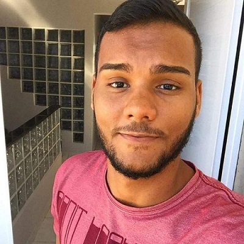

- Home
- >
- Currículo
Currículo
Dados Pessoais

Nome:
Douglas da Silva Nascimento
Data de Nascimento:
09/03/1999
Residência:
São Gonçalo, Brasil
Idiomas:
Português (Nativo)
Sobre Mim
Olá, tudo bem ? Espero que sim ! Seja bem-vindo(a) ao meu perfil 😄 Eu me chamo Douglas, sou formado em Logística, porém atualmente estudo Análise e desenvolvimento de Sistemas , atualmente sou Estagiário em tecnologia da informação na Renave.
Eu sou uma planejador nato, que gosta de registrar tudo, para sempre ter em mãos o que for necessário, gosto de estudar assuntos novos e sou movido a desafios. Adoro debater sobre assuntos tecnológicos para me atualizar e aprender mais, sempre estou em busca de novos conhecimentos, seja em cursos, eventos, bootcamps(de programação) e na comunidade ao todo.
Obrigada pela visita aqui no meu Portfolio, volte sempre e quem sabe, podemos trocar ideias na redes sociais ?! Até porque, sou bem receptivo, gosto de novas conexões e conversas construtivas.
Educação
2018 / 2020
Tecnologo em Logística / Anhanguera Educacional
2020 / 2022 - Em Andamento
Análise e Desenvolvimento de Sistemas / Universidade Estácio de Sá
2020
Curso de banco de dados e SQL
2021
Hardware, manutenção de computadores e notebooks
2021
Curso de HTML5 & CSS3
Habilidades
Competências e Habilidades
Proativo
Determinado
Capacidade de Aprender
Raciocínio Rápido
Boa comunicação Verbal
Experiência de Trabalho
2020 - 2021
Jovem Aprendiz - DELIMA Reparos Navais - Ilha do Viana
2021 (Atual)
Estagiário em Tecnologia da Informação - Renave - Ilha do Viana
Contato
douglassnascimet@gmail.com
(21)98256-5216
← Voltar ao início